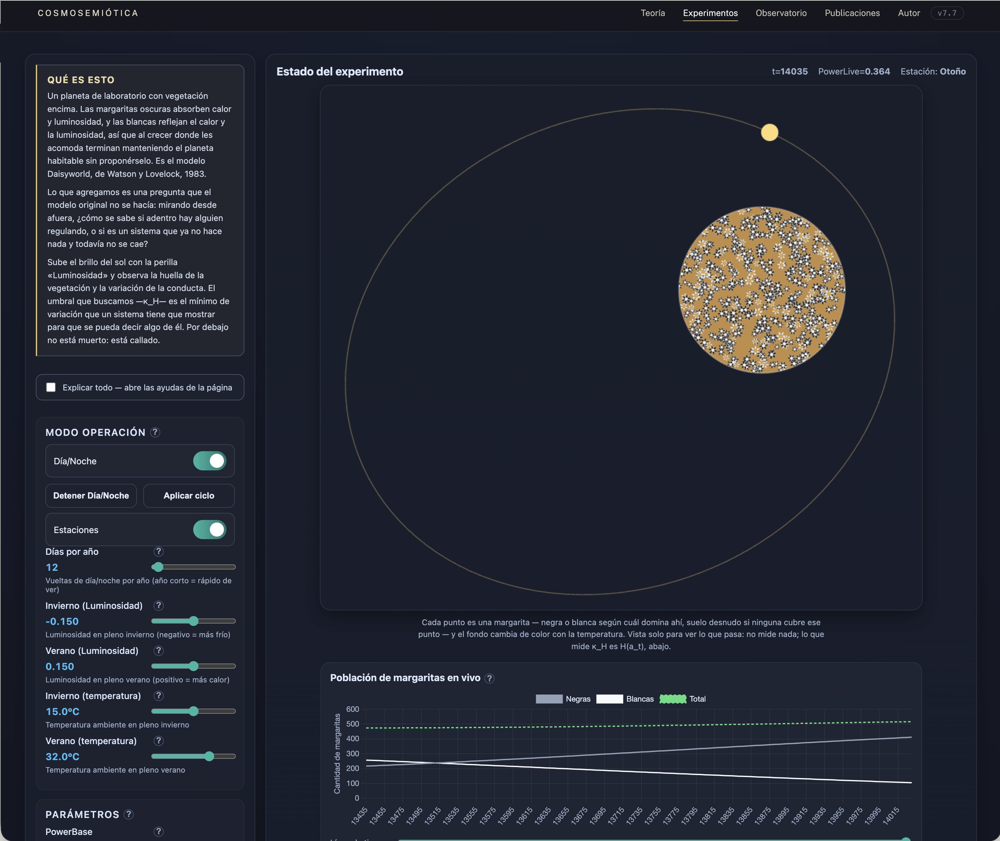

Daisyworld con física real, un umbral de conducta (κ_H) y una batería de estrés completa sobre lo que el instrumento puede —y no puede— mostrar.

Abrir el instrumento en vivo →Antes de todo lo demás: un reconocimiento. Este experimento no existiría sin James Lovelock. Daisyworld —el planeta de laboratorio con margaritas oscuras y claras que regulan su propio clima sin proponérselo— es un modelo suyo, publicado junto a Andrew Watson en 1983 (Tellus 35B, "Biological homeostasis of the global environment: the parable of Daisyworld"). Toda esta batería empieza reproduciendo ESE experimento, con la física correcta, antes de tocar nada propio.
Lovelock no lo diseñó porque pensara que unas flores de colores pudieran de verdad regular el clima de un planeta real. Lo diseñó para responder a una acusación concreta de Ford Doolittle y Richard Dawkins: que la hipótesis Gaia era teleológica, que exigía una biosfera capaz de "saber" hacia dónde dirigir el clima, como si tuviera un propósito consciente. Presentó la idea por primera vez en 1982, en una conferencia sobre biomineralización en Ámsterdam, y la publicó al año siguiente junto a Andrew Watson, quien le dio forma matemática formal. Para que el argumento cupiera en una sola ecuación manejable, redujo el ambiente a una única variable —la temperatura— y la biota a una única especie con dos variantes de color: margaritas oscuras, que absorben más luz y calientan su entorno, y margaritas claras, que la reflejan y lo enfrían. Ninguna de las dos "sabe" nada del clima planetario; cada una sólo compite por crecer donde la temperatura local le conviene. De esa competencia simple, sin ningún plan ni anticipación, emerge la regulación:
«Cuando probé por primera vez el modelo del mundo de las margaritas, quedé sorprendido y encantado de la fuerte regulación de temperatura planetaria que surgía del simple crecimiento competitivo de plantas de colores claros y oscuros.»
Lovelock, J. (1988/1993). Las Edades de Gaia, pág. 63.
La figura 2.1 de su libro —la que reproducimos más abajo— compara dos maneras de predecir la evolución de ese planeta a medida que su sol envejece y brilla más: según la física y la biología convencionales trabajando por separado (curvas A y A1), las margaritas sólo reaccionan al ambiente y mueren cuando éste cambia, sin ninguna retroalimentación hacia el clima; según la geofisiología (curva B), el ecosistema regula activamente la temperatura en un margen mucho más amplio de luminosidad solar, y la línea discontinua muestra cuánto habría subido la temperatura si la vida no hubiera estado presente en absoluto. Para Lovelock, esa sola figura ya bastaba como respuesta a sus críticos:
«Ello representa una refutación definitiva de la acusación de que la hipótesis de Gaia es teleológica, y dicha refutación es, hasta el momento presente, incontrovertible.»
Lovelock, J. (1988/1993). Las Edades de Gaia, pág. 64.
Antes de medir nada nuestro, corrimos Daisyworld tal como lo describieron Watson & Lovelock: margaritas negras y blancas (albedo 0,25 y 0,75), muriendo a tasa γ=0,3, con la temperatura del planeta fijada por la ley de Stefan-Boltzmann real —no una aproximación lineal— y la temperatura óptima de crecimiento en 22,5°C, exactamente como en el paper. Sin sensor, sin día/noche, sin nada nuestro: la versión más desnuda posible.
Primero, la lámina que inspira todo esto, redibujada tal como aparece en el libro:
Fig. 0a. Redibujado a partir de la lámina original de Lovelock: población de margaritas según la temperatura, comparando el modelo convencional sin retroalimentación (curvas A y A1) con el modelo regulado por la propia vida (curva B). El corchete ΔT marca cuánto más templado necesita estar el planeta, sin regulación, para sostener la misma población que la vida sostiene con regulación.
Redibujo esquemático de Lovelock, J. (1988/1993). Las Edades de Gaia, fig. 2.1, pág. 62 — no es un calco de píxeles, es una reconstrucción fiel a la forma y a la idea de la lámina original.
La primera versión de esta figura conectaba 49 equilibrios sueltos con líneas rectas —y en la naturaleza no hay líneas rectas—. Esta vez corrimos el experimento como Lovelock lo describe de verdad: el sol subiendo de brillo gradualmente, con las margaritas reaccionando en tiempo real, no 49 fotos sueltas de "cuál sería el equilibrio aquí". El resultado son miles de pasos continuos, en el mismo formato de dos paneles de la Fig. 3.2 del libro (población arriba, temperatura abajo, luminosidad en el eje común):
Fig. 0b. El mismo experimento corrido como una rampa continua —el sol subiendo de brillo paso a paso, no 49 equilibrios sueltos— en el formato de dos paneles de la Fig. 3.2 del libro. Arriba, población de negras y blancas por separado (se reemplazan una a otra, como en la lámina); abajo, temperatura con vida (sólida) y sin vida (punteada). Sin líneas rectas artificiales: cada curva son miles de pasos reales.
Rampa de 2.000.000 de pasos entre luminosidad 0,50 y 1,65 (γ=0,3, temperatura óptima=22,5°C), motor validado bit a bit contra el simulador real.
Un hallazgo no buscado: las margaritas no colonizan exactamente cuando el equilibrio matemático lo permite. Como sólo pueden crecer multiplicándose a partir de la poblacioncita que ya tienen, por pequeña que sea, hay un retraso real antes de que la vida "prenda", incluso corriendo la rampa mucho más lenta. Es un efecto genuino del modelo (parecido al "retraso de bifurcación" de los sistemas dinámicos lentos), no un artefacto de cómputo.
Lo mismo pasa al revés: tampoco hay extinción total
"0%" en la tabla de abajo es lo que se observa, no lo que hay matemáticamente. Verificado directamente: forzando el planeta a luminosidad cero durante 200.000 pasos, la población nunca llega a cero exacto — queda en un residuo de punto flotante y recrece por completo si la luminosidad vuelve a subir, sin importar cuánto tiempo haya pasado "muerta". Es una propiedad matemática del propio Daisyworld (la ecuación de crecimiento es multiplicativa en la propia población, así que solo se acerca a cero, nunca lo toca), no un error de esta implementación — y por eso no se corrigió con un piso artificial. Detalle completo en la guía del instrumento.
Los números detrás de la figura, en los puntos que importan:
| Luminosidad | Tf con vida | Tf estéril | Negras | Blancas | Qué pasa |
|---|---|---|---|---|---|
| 0,50–0,73 | -17,6 a 22,7°C | -20,8 a 4,2°C | 0% | 0% | planeta todavía muerto |
| 0,740 | 22,9°C | 5,1°C | →66% | 0% | colonización — retrasada frente al umbral matemático |
| 0,892 | 29,7°C | 18,4°C | 44% | 0% | pico de temperatura, dominancia negra |
| 0,943 | 22,5°C | 22,5°C | 31% | 31% | cruce negro→blanco |
| 1,282 | 18,0°C | 46,1°C | 1% | 62% | mínimo de temperatura, casi puro blanco |
| 1,584 | 31,9→60,3°C | 63,4°C | 0% | 64%→0% | colapso — cobertura observable a cero |
Corrección v7.13 (01-ago-2026) — columna "Tf estéril"
Una auditoría externa (Belbo, GPT-5.6) detectó que varios valores de esta columna no coincidían con la física del propio instrumento. Se recalculó cada valor directamente con la fórmula real que usa el código (abioticTf(L) = (DAISY_S/DAISY_SIGMA · L·(1−albedoBare))^0,25 − 273, con albedo de suelo desnudo=0,5) — los números de arriba ya están corregidos. El error más grande estaba en L=0,943 (decía 18,7°C, es 22,5°C) y L=0,740 (decía 22,2°C, es 5,1°C). La columna "Tf con vida" no se tocó: es la salida dinámica de la simulación con margaritas, no un valor de forma cerrada que se pueda recalcular a mano. La misma auditoría también encontró que el sensor PTC calculaba su razón en Celsius, una magnitud que no es físicamente invariante de escala; el instrumento ahora calcula en paralelo la razón equivalente en Kelvin (exportable en el CSV) sin alterar la calibración vigente del sensor — detalle en la guía del instrumento.
Validado, no solo calculado
Toda la batería de este informe corrió en un motor auxiliar reescrito para ser miles de veces más rápido que la página real (sin el campo 2D decorativo, que no alimenta nada de esto) — y verificado bit a bit contra el simulador real en cada tramo antes de confiar en un solo número. Donde el motor rápido y el simulador real se compararon directamente, coincidieron exactamente.
Barrido fino de Luminosidad (0,55–1,45) cruzado con siete valores de T óptima (20° a 30°C), midiendo temperatura, huella biótica y κ_H en cada punto. El resultado más importante no era el que esperábamos.
Hallazgo
Esto se repite igual para los siete valores de T óptima probados (20° a 30°C): la ventana de vida se corre a lo largo del eje de luminosidad (más T óptima, más luminosidad hace falta) pero su ancho apenas cambia (0,58 a 0,64), y κ_H nunca "avisa" que el borde se acerca. Mirando solo la entropía de la conducta, un observador externo no puede anticipar el colapso — lo ve exactamente igual de "vivo" un paso antes de que el sistema se apague por completo.
Si κ_H no avisa, ¿hay algo que sí lo haga? Se midió el tiempo que tarda la población en volver a su punto de partida después de un golpe estandarizado, en el mismo barrido de luminosidad.
La lectura conjunta
κ_H y el tiempo de recuperación miden cosas distintas y se comportan distinto cerca del borde: uno es ciego al colapso que se aproxima, el otro lo anuncia con mucha anticipación. Para un futuro criterio de "silencio vs. cierre", el tiempo de recuperación parece el candidato más prometedor de los dos — no la entropía de la conducta sola.
Con el ciclo anual encendido (de fábrica desde esta versión), se probó qué tan duro puede ser un invierno antes de que el sistema no vuelva. El resultado tiene tres regímenes, no dos.
| Invierno (luminosidad) | Cobertura mínima / año | Régimen |
|---|---|---|
| -0,15 (default) | 32% | cómodo — nunca se acerca al borde |
| -0,20 | 18% | cómodo |
| -0,24 | 2,8% | al borde — casi nada, pero vivo |
| -0,26 a -0,29 | 0,0% | filo de navaja — toca cero cada invierno, resucita cada verano, para siempre |
| -0,30 | 0,0% | extinto — no vuelve nunca más |
Hallazgo
Entre "vive tranquilo" y "muere para siempre" hay una franja angosta (apenas 3 centésimas de luminosidad de ancho) donde el planeta vive permanentemente al borde: silencio total todos los inviernos, vida plena todos los veranos, sin nunca estabilizarse ni morir del todo. La temperatura del sobre día/noche, sorprendentemente, casi no cambia dónde cae esta franja — el eje que manda es la luminosidad, igual que en el Daisyworld puro.
Con las estaciones encendidas de fábrica, el calibrado viejo del sensor (Tc=25°C, Exponente=4) quedaba pegado en un tope el 99% del tiempo desde que se abría la página — el invierno por defecto (15°C) está demasiado lejos de donde el sensor podía leer. Recalibrado a Tc=16°C, Exponente=1: 0% de saturación en tres años simulados completos, incluidos los inviernos más fríos del rango normal.
| Qué se mueve | Saturación promedio | Lectura |
|---|---|---|
| T óptima 20°→30°C (Daisyworld puro) | 0,0% | robusto |
| Invierno hasta 10°C (más frío que el default) | 0,3% | robusto |
| Invierno hasta -5°C | 37,3% | se satura — esperable, es más frío que lo calibrado |
| Tc PTC movido a mano hasta 25°C (el viejo default) | 19,5% | se degrada — confirma que 25°C era el problema |
PowerBase, Ruido y β (persistencia) completan el cuadro: